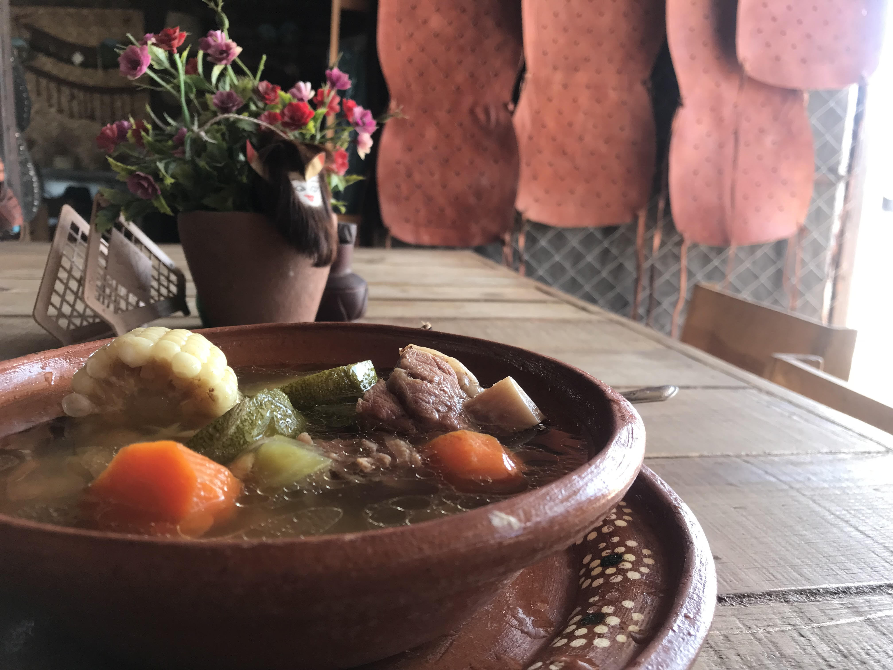

Home
Caldo de Res

Description
Caldo de Res is a hearty, savory beef and vegetable soup that is a popular and comforting dish. It features slow-cooked beef, often bone-in shank or short ribs, in a flavorful broth with a variety of vegetables such as carrots, potatoes, corn on the cob, and squash (güisquil or ayote). It is typically served with a side of rice and garnished with fresh elements like cilantro, lime wedges, and avocado.
The dish itself has roots within Central America ranging from Mexico to Costa Rica, so there are different iterations of the soup that include different ingredients, but for the sake of this recipe, we'll be following the Guatemalan version.
What you'll need
- 1½ lbs of beef (bone-in shank, chuck roast, or short ribs)
- 1 tomato, quartered
- 2 potatoes, cubed
- 1 onion, chopped
- 3 carrots, chopped
- ½ medium head cabbage, chopped
- 4 cloves of garlic, minced
- 6 tsp of chopped cilantro
- 1 tbsp of salt
- ¼ tsp of ground cumin
- 2 oz of fresh lime juice
Instructions
- In a large pot over low heat combine the beef, tomato, potatoes, onion, carrots, cabbage, garlic, 5 teaspoons cilantro, salt and cumin. Add water to cover and stir well. Cover and simmer for 2 hours.
- Remove lid, stir, and simmer for another hour with lid off. Serve hot. Just before eating, squeeze in fresh lime juice to taste and sprinkle with remaining cilantro.